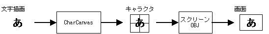
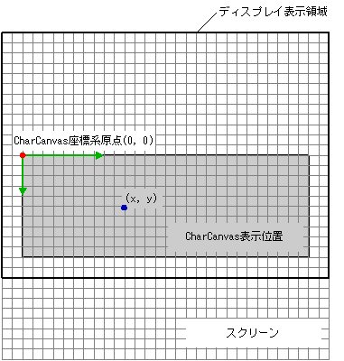

In the Text Character Drawing Library, the term 'character' always refers to an 8x8 pixel image that is a compositional element of OBJs and BGs. "Character" never means a "text character."
The Text Character Drawing Library draws text characters in pixels on screen display elements that comprise characters such as OBJ or BG characters.
The Text Character Drawing Library associates the targeted character with a virtual drawing screen called the CharCanvas and then draws the text character on that virtual screen. The CharCanvas drawing screen is filled with tiled characters. When a text character is drawn on the virtual drawing screen, the Text Character Drawing Library draws on the character itself.
With the Nintendo DS, even if the character is drawn on itself, it is not displayed on the physical screen. The screen and OAM need to be configured for BG and OBJ characters, respectively. However, the Text Character Drawing Library has functions that simplify the configuration of these settings.
With an OBJ character, a cell from CharCanvas can be contructed and drawn with the renderer.
The functions of the Text Character Drawing Library can be divided into five groups.
|
Building CharCanvas Functions for initializing and building CharCanvas. |
NNS_G2dCharCanvasInitForBG()NNS_G2dCharCanvasInitForOBJ1D()NNS_G2dCharCanvasInitForOBJ2DRect() |
|
Building Cells Functions used to build cells that display CharCanvas. |
NNS_G2dCharCanvasCalcCellDataSize1D()NNS_G2dCharCanvasCalcCellDataSize2DRect()NNS_G2dCharCanvasMakeCell1D()NNS_G2dCharCanvasMakeCell2DRect() |
|
Filling CharCanvas Functions for filling CharCanvas with a solid color. |
NNS_G2dCharCanvasClear()NNS_G2dCharCanvasClearArea() |
|
Text character drawing Functions for drawing text characters to CharCanvas. |
NNS_G2dCharCanvasDrawChar()NNS_G2dCharCanvasDrawGlyph() |
|
Configuring the screen & OAM settings Functions for setting the screen and OAM for displaying CharCanvas. |
NNS_G2dMapScrToCharText()NNS_G2dMapScrToCharAffine()NNS_G2dMapScrToChar256x16Pltt()NNS_G2dCalcRequireOBJ1D()NNS_G2dCalcRequireOBJ2DRect()NNS_G2dArrangeOBJ1D()NNS_G2dArrangeOBJ2DRect() |
Based on these classifications, the flow for drawing a text character follows:
(1) Build CharCanvas using the building functions.
Configure the screen and OAM settings using the configuration functions.
As an alternative, construct a cell using the cell-building functions.
(2) Clear CharCanvas using the fill functions.
(3) Draw a text character using the drawing functions.
From this point, use steps (2) and (3) only when required.
(4) If a cell was built in (1), draw the cell using the renderer.
In most cases, it is better to use the Character String Drawing library instead of directly drawing the text character with these text-character drawing functions.
The text character drawing functions express the position of the text character using a pixel-unit coordinate system; the upper-left corner of CharCanvas is the origin and moving towards the lower-right corner is the positive direction. In this reference, this coordinate system is called the CharCanvas coordinate system. 
07/12/2005 Added cell-building functions.
05/25/2005 Initial version.